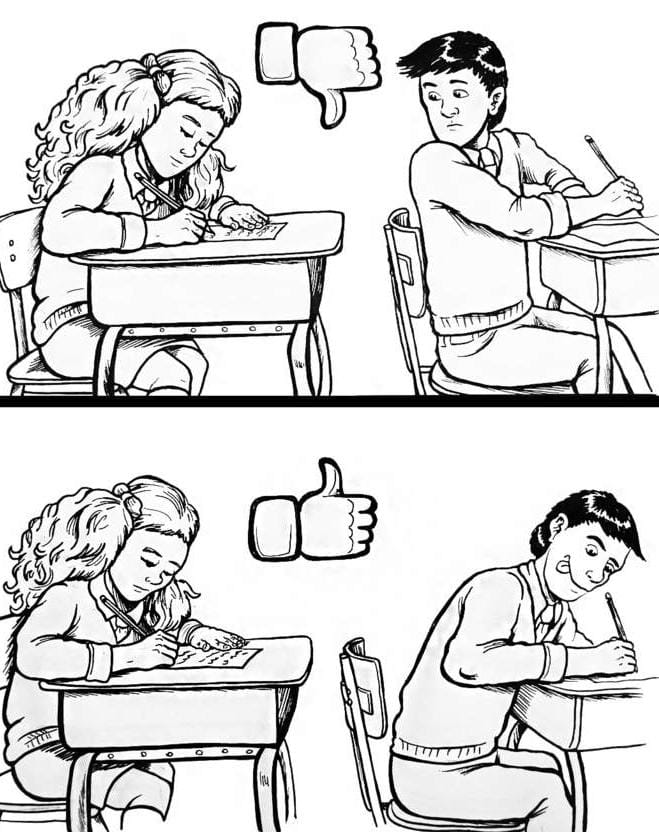

Honestidad: La Transparencia en el Aprendizaje
La base de toda relación de confianza, fundamental para el desarrollo ético y académico.
¿Qué implica la Honestidad?
La honestidad es actuar con coherencia y verdad en lo que se dice, se piensa y se hace. En el contexto educativo, abarca desde la integridad académica hasta la sinceridad en la comunicación diaria entre alumnos y maestros.

"La verdad es la brújula que guía la integridad personal."
Manifestaciones de la Honestidad en el Aula
Académica
No incurrir en plagio o copia, citar correctamente las fuentes y presentar trabajos originales.
Comunicativa
Hablar con la verdad sobre las dificultades, el progreso y los errores cometidos.
Comportamental
Reconocer los propios actos (buenos o malos) y asumir las responsabilidades sin culpar a terceros.

Construyendo la Confianza Mutua
-
Credibilidad: La honestidad del alumno genera credibilidad y respeto ante el docente.
-
Aprendizaje Genuino: Al admitir el desconocimiento, el docente puede enfocar mejor la enseñanza.
-
Ambiente Ético: Fomenta un entorno donde la integridad es la norma, no la excepción.
La honestidad es un reflejo de tu carácter y el valor más sólido que puedes ofrecer a tu comunidad educativa.
¡Sé un ejemplo de integridad!